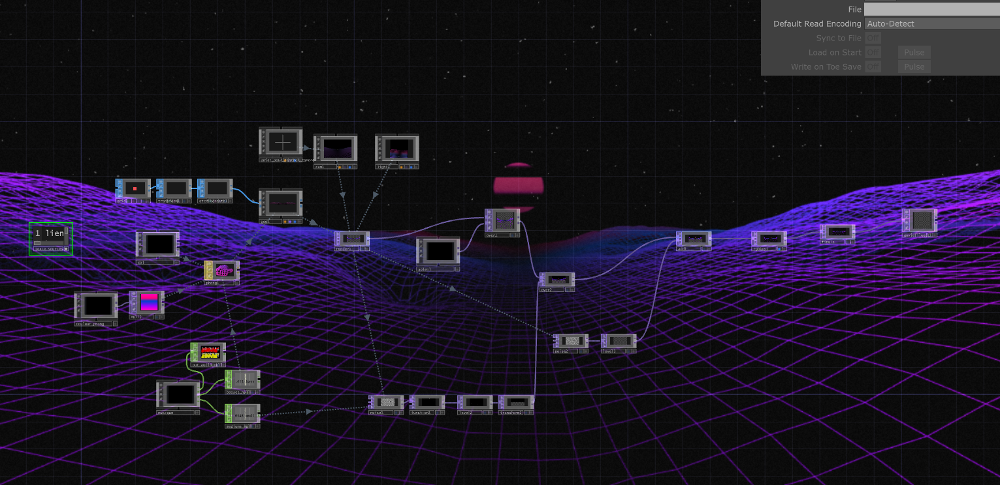
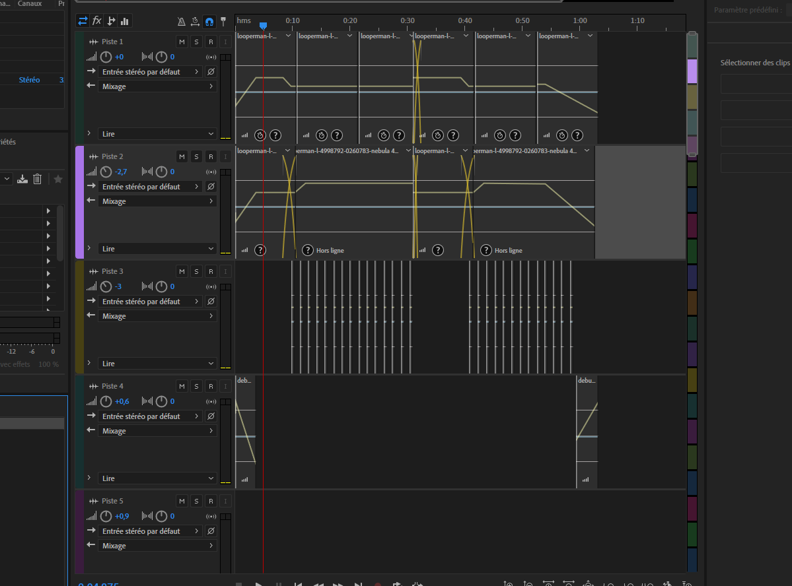

Synthwave vibe
Logiciels et languages utilisés
Touch designer
Adobe Audition
Résumé
L'objectif du projet était de faire une vidéo qui interagissait avec de la musique, j'ai assemblé des sons pour former la musique et j'ai travaillé sur le visuel.
Le début


On a commencé en classe à programmer les écouteurs de basses, médiums et les aigus qui vont nous servir pour l’interactivité.
La musique
Après, nous avions dû créer une musique propre à nous, donc j’ai pris des sons sur freesound et je les ai mixés pour donner une musique dont je suis fier.
Le visuel


Ensuite j’ai suivi une vidéo qui m’a aidé a mettre en place le visuel, pour ensuite que j’ajoute ma touche personnel tels que les couleurs, sur quoi j’interagis et ce qui peut aider à faire une meilleur effet d’avancement.
Assemblage

Finalement, une fois la musique terminé, avoir finis mon visuel et l’interaction, je les ai assemblés (bien évidemment j’ai corrigés des défauts) et c’est fini.